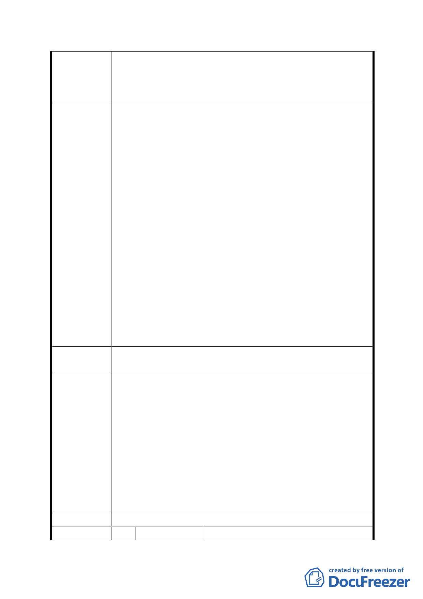

4. 滯洪池是否為治水政策的唯一方案？高達五億的費用，
僅能針對治水提出對策，卻損失了得之不易的公共設施
用地。
5. 配合歷史及當地的原有地形保留池塘。
1. 遷移軍營至都市的邊緣（依據文山通檢意見執行），廣設
住宅區、商業區，引入民間開發資源。
2. 滯洪池過度工程導向的政策，僅能治水，無法有效反應
捷運站周邊珍貴土地的附加價值。採用自然生態工法，
不要地下的貯留池，平常是草地就像河濱公園一樣，下
雨就淹水。
3. 水利處對於整體防洪計畫未盡公平原則，全部 27900 ㎡
中有 11000 ㎡集中於本處，從分佈與水量分配的基本原
則來說非常不合理。請以生態工法簡單自然的方法來推
建 議 辦 法 動治水，勿相信「人定勝天」！應考慮與水共存的生活
態度。治水很重要，但文山區歷年來的淹水狀況並非十
分嚴重，應考慮排水系統的改善，配合簡單但卻有效的
生態工法，改善透水層、綠化保水的措施，應可改善目
前積水的狀況。
4. 遷移墳墓區，可增加大量透水層的面積，以福州山公園
模式執行，配合植樹完全符節能減碳的國家政策，同時
還能推動都市的整體發展。
5. 原有在辛亥隧道周邊就有很多水池（如翠湖），應予適當
地保留取代目前的滯洪池。
第五次專案小組
審查結論
同編號 1
1.同編號 7、9 之說明。
2.本防洪調節池僅興隆路及辛亥路整體防災系統中一座，後
續仍會陸續推動其他防洪調節池建置，保護人民免於洪災
威脅。
市府修正後
回應說明
3.本防洪調節池雨水下水道高程因素，分為地面池及地下
池，地面池以調節萬美街雨水下水道洪峰流量為主，除必
要滯洪空間外，其餘空間為綠帶及環湖步道，屬於近生態
式滯洪池。而地下滯洪池主要調節辛亥雨水下道洪峰流
量，因高程限制，故必須採用地下滯洪方式。
4.翠湖上游集水面積約僅 1.1 公頃，然本防洪調節池集水面
積約 64 公頃，故其滯洪效果遠大於翠湖。
委員會決議 同意依「市府修正後回應說明」辦理
編 號 17 陳情人
林呂通等42人
- 25 -